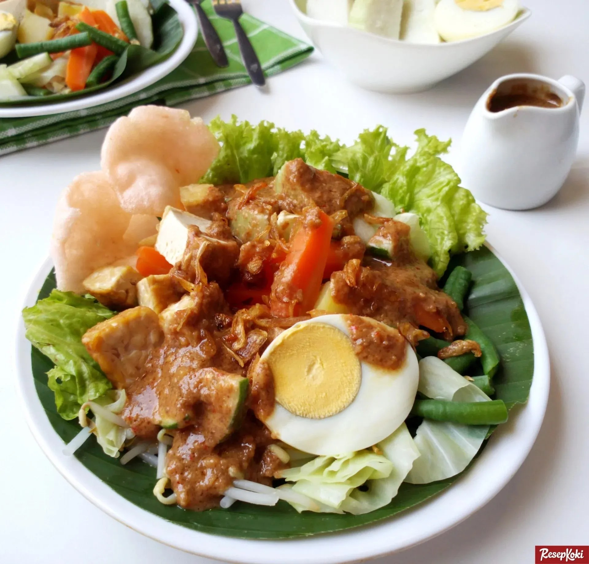

Gado-Gado

Deskripsi
Resep gado-gado sudah dikenal sejak lama sebagai salad-nya orang Indonesia. Kombinasi sayuran segar, kentang, tempe, dan tahu berpadu lezat dengan bumbu gado-gado yang khas dibuat dari kacang. Ada rasa gurih, manis, dan untuk penggemar rasa pedas, tentu jangan sampai ketinggalan ditambah cabai. Penasaran dengan istimewanya resep yang satu ini? Mari kita simak cara membuat gado-gado berikut!
Bahan-Bahan
- 350 g kentang
- 350 g tahu putih
- 350 g tempe, potong kotak
- 7 lembar daun selada
- 2 buah ketimun
- 100 g taoge, rebus
- 200 g kol, iris kasar
- minyak goreng
- Bumbu perendam tahu-tempe
- 3 siung bawang putih
- 1 sdt ketumbar bubuk
- 1 sdt garam
- 200 ml air
Bumbu Kacang
- 200 g kacang tanah
- 3 lembar daun jeruk
- 2 sdm kecap manis
- 1 sdt garam
- 3 sdt gula merah
- 300 ml santan encer
- 300 ml air
- 1 sdt asam jawa, larutkan dengan 2 sdm air
Bumbu Halus
- 5 buah cabai merah besar
- 3 buah cabai merah keriting
- 5 cm kencur
- 4 siung bawang putih
- ½ sdt terasi goreng
Pelengkap
- 6 butir telur rebus
- 2 buah tomat, potong-potong
- 3 sdm bawang merah goreng
- kerupuk
- Emping
Langkah masak
- Aduk rata tempe dan tahu bersama bumbu perendam. Sisihkan.
- Panaskan minyak, goreng tahu dan tempe hingga garing dan matang. Angkat dan tiriskan. Sisihkan.
- Bumbu kacang: Panaskan 3 sdm minyak, tumis bumbu halus dan daun jeruk hingga harum. Masukkan kacang tanah dan Bango Kecap Manis, aduk rata. Tambahkan sisa semua bahan, aduk. Masak hingga matang. Angkat. Biarkan hingga tidak panas.
- Tata kentang, tahu, tempe, daun selada, ketimun, taoge, dan kol di atas piring saji. Tuang bumbu kacang dan taburi bawang merah goreng. Sajikan dengan pelengkap.
Home